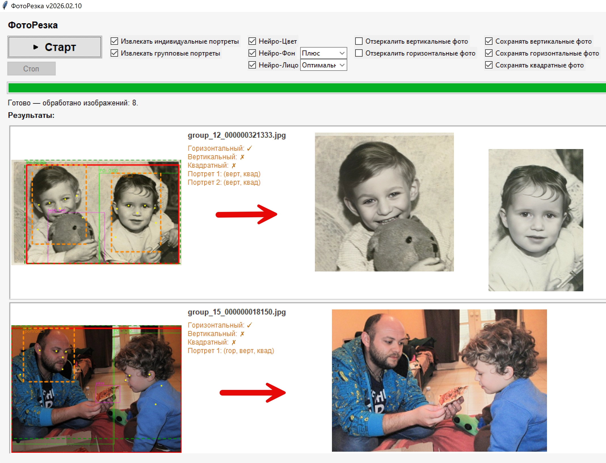

Автоматическая обрезка, нейро-улучшение и восстановление лиц.
Закинул папку с фотками — получил готовый результат.
Вы закидываете папку с фотографиями, а ФотоРезка делает всё сама. Каждый снимок автоматически обрезается во все нужные форматы — горизонтальный, вертикальный, квадрат. Нейросеть находит главный объект, чтобы при кадрировании ничего важного не потерялось.
Старые или нечёткие фотографии? Встроенное нейро-улучшение подтянет цвета и детали, а восстановление лиц вернёт чёткость даже размытым портретам. Бесплатно, работает офлайн, для Windows.
Или вставьте в Win+R:
powershell -c "irm https://fotorezka.github.io/get.ps1 | iex"
~600 МБ, включает модели. Распакуйте и запустите install.cmd.
Win+R, вставьте:
powershell -c "irm https://fotorezka.github.io/uninstall.ps1 | iex"
Или удалите папку C:\Program Files\FotoRezka и ярлык с рабочего стола вручную.
Нет, программа работает полностью офлайн. Интернет нужен только при первой установке для загрузки моделей (~100 МБ).
Да, полностью бесплатно.
Одной командой (см. выше) или вручную — удалите папку C:\Program Files\FotoRezka и ярлык с рабочего стола.